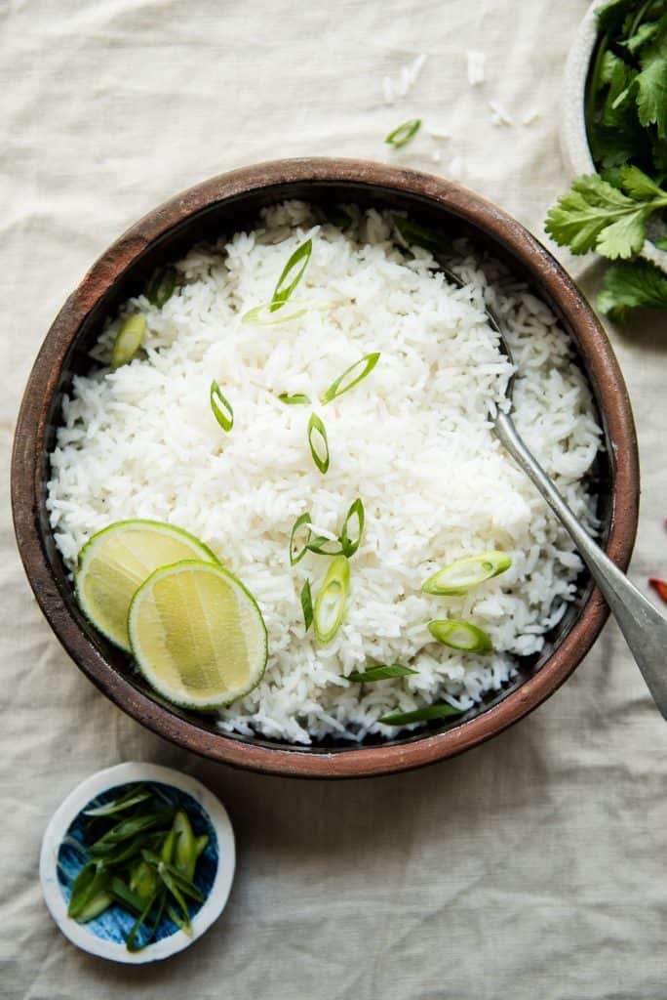

Description
Lime flavor compliments this coconut rice very well, so I highly recommend
mixing 1 to 2 tablespoons of lime juice to the rice to brighten everything
up. You can infuse even more lime flavor by adding the zest of 1 lime into
the rice. Add it before you start cooking the rice or after the rice is
cooked. Note that if you cook the rice with the lime zest, the rice will
pick up a faint green hue.
Once you turn off the heat for the rice, let it rest in the saucepan,
covered. Because we're cooking the rice for only about 8 to 9 minutes, we
need the residual steam in the saucepan to finish the cooking process.
That's why it's crucial to leave the lid on.
Ingredients
- 1 cup jasmine or basmati rice
- 1/3 cup full-fat coconut milk
- 1 cup water
- 3/4 teaspoon kosher salt
- 1 1/2 tablespoons lime juice
Instructions
-
Rinse the rice several times and transfer it to a saucepan. Add the
coconut milk, water, and salt and give everything a stir.
-
Bring everything to boil, uncovered. Reduce the heat to low, cover the
saucepan and cook for 8 to 9 minutes, until the water has been absorbed
by the rice. I usually transfer the saucepan to a burner with a smaller
flame so that the liquids don't absorb too quickly. Turn off the heat
and let the rice sit on the stove for 10 to 12 minutes.
-
Uncover the saucepan. You'll notice a layer of coconut cream at the top
of the rice, and that's perfectly normal. Fluff the rice with a fork and
stir to distribute the coconut cream. Add the lime juice to the rice and
stir again. Taste the rice and add more lime juice, if necessary. Serve
the rice with your favorite dish.